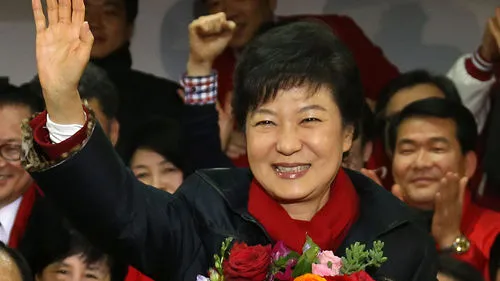

선거 정보: 제 18대 대통령 선거
✔ 투표일: 2012년 12월 19일 (수) 06:00 ~ 20:00
✔ 사전투표: 사전투표 미도입
✔ 선거권자: 1993년 12월 20일 이전 출생한 대한민국 국민
✔ 후보자 등록 기간: 2012년 11월 25일 ~ 11월 26일 (2일간)
✔ 선거운동 기간: 2012년 11월 27일 ~ 12월 18일 (22일간)
주요 후보자 정보
정당 구도
양강 구도 (새누리당 vs 민주통합당)
주요 쟁점
✔ 경제 민주화: 재벌 개혁과 경제력 집중 완화, 대기업-중소기업 간 상생을 위한 정책
✔ 복지 정책: 무상보육, 무상급식 등 보편적 복지와 맞춤형 복지 간 방향성 차이 부각
✔ 정치 개혁: 이명박 정부 이후 정권 교체 여부 및 권력기관 개혁 문제가 논의됨
✔ 대북 정책: 남북관계 개선을 위한 대화 우선 전략(문재인)과 신뢰 프로세스 기반 접근(박근혜) 대립
✔ 청년·여성 정책: 청년 고용, 비정규직 문제, 여성 경력단절 해소 및 일가정 양립 지원 등
투표율
전체 투표율: 75.8%
| 연령대 | 남성 | 여성 |
|---|---|---|
| 19세 | 72.5% | 75.7% |
| 20대 | 67.4% | 69.7% |
| 30대 | 66.9% | 73.3% |
| 40대 | 73.5% | 77.7% |
| 50대 | 81.0% | 82.9% |
| 60대+ | 85.9% | 77.1% |
| 지역 | 선거인수 | 투표수 | 투표율 | 기권수 |
|---|---|---|---|---|
| 서울특별시 | 8,393,847 | 6,307,869 | 75.14% | 2,085,978 |
| 부산광역시 | 2,911,700 | 2,219,699 | 76.23% | 692,001 |
| 대구광역시 | 1,990,746 | 1,585,806 | 79.66% | 404,940 |
| 인천광역시 | 2,391,145 | 1,794,627 | 75.06% | 596,518 |
| 광주광역시 | 1,117,781 | 898,416 | 80.37% | 219,365 |
| 대전광역시 | 1,160,368 | 880,721 | 75.91% | 279,647 |
| 울산광역시 | 892,016 | 693,079 | 77.69% | 198,937 |
| 세종특별자치시 | 72,072 | 57,073 | 79.17% | 14,999 |
| 경기도 | 9,364,077 | 7,018,577 | 74.95% | 2,345,500 |
| 강원도 | 1,279,836 | 1,001,698 | 78.26% | 278,138 |
| 충청북도 | 1,291,355 | 1,009,918 | 78.22% | 281,437 |
| 충청남도 | 1,667,331 | 1,308,109 | 78.45% | 359,222 |
| 전라북도 | 1,725,973 | 1,418,379 | 82.21% | 307,594 |
| 전라남도 | 1,698,429 | 1,399,056 | 82.39% | 299,373 |
| 경상북도 | 2,353,582 | 1,919,039 | 81.55% | 434,543 |
| 경상남도 | 2,800,919 | 2,183,886 | 77.96% | 617,033 |
| 제주특별자치도 | 475,552 | 367,928 | 77.36% | 107,624 |
| 재외국민 | 222,389 | 158,235 | 71.15% | 64,154 |
| 합계 | 40,507,842 | 30,721,459 | 75.84% | 9,786,383 |
| 시간 | 누적 투표수 | 투표율 |
|---|---|---|
| 07시 | 1,125,385 | 2.78% |
| 09시 | 4,716,438 | 11.64% |
| 12시 | 14,132,003 | 34.89% |
| 14시 | 21,289,252 | 52.56% |
| 16시 | 26,393,513 | 65.16% |
| 18시 | 30,721,459 | 75.84% |
개표 결과

박근혜(새누리당) 당선 (득표율 51.55%)
| 지역 | 박근혜 | 문재인 |
|---|---|---|
| 전국 | 15,773,128 (51.55%) | 14,692,632 (48.02%) |
| 서울특별시 | 3,024,572 (48.18%) | 3,227,639 (51.42%) |
| 부산광역시 | 1,324,159 (59.82%) | 882,511 (39.87%) |
| 대구광역시 | 1,267,789 (80.14%) | 309,034 (19.53%) |
| 인천광역시 | 852,600 (51.58%) | 794,213 (48.04%) |
| 광주광역시 | 69,574 (7.76%) | 823,737 (91.97%) |
| 대전광역시 | 450,576 (49.95%) | 448,310 (49.70%) |
| 울산광역시 | 413,977 (59.78%) | 275,451 (39.78%) |
| 세종특별자치시 | 33,587 (51.91%) | 30,787 (47.58%) |
| 경기도 | 3,528,915 (50.43%) | 3,442,084 (49.19%) |
| 강원도 | 562,876 (61.97%) | 340,870 (37.53%) |
| 충청북도 | 518,442 (56.22%) | 398,907 (43.26%) |
| 충청남도 | 658,928 (56.66%) | 497,630 (42.79%) |
| 전라북도 | 150,315 (13.22%) | 980,322 (86.25%) |
| 전라남도 | 116,296 (10.00%) | 1,038,347 (89.28%) |
| 경상북도 | 1,375,164 (80.82%) | 316,659 (18.61%) |
| 경상남도 | 1,259,174 (63.12%) | 724,896 (36.33%) |
| 제주특별자치도 | 166,184 (50.46%) | 161,235 (48.95%) |